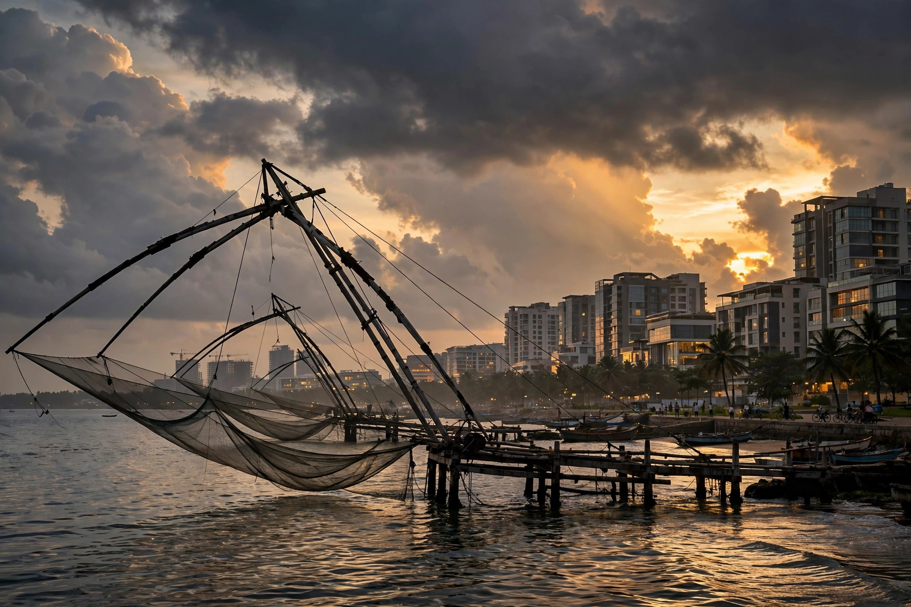

Why Kochi?
Kerala's Rising Trader Community
By the PropFirm Conclave team · Updated October 2026

When we decided to build India's focused prop trading gathering, the question wasn't just what — it was where. Mumbai and Delhi host everything. We wanted somewhere the community actually lives. We chose Kochi.
Kerala trades — deeply
Ask anyone in Indian markets: Kerala has one of the country's most engaged retail trading populations. High financial literacy, deep Gulf connections bringing global market exposure home, and thriving local trading communities in Kochi, Thrissur, Kozhikode and Trivandrum. The audience for a funded-trading event isn't hypothetical here — it's already trading.
A city built for gatherings
Kochi pairs serious infrastructure with serious charm. The Adlux International Convention Centre gives us big-stage auditoriums and a proper expo hall; Fort Kochi, the backwaters and the food give attendees a reason to stay the weekend. December weather doesn't hurt either.
We didn't want traders to just attend an event. We wanted them to bring friends, bring family, and make a weekend of it.
The Gulf bridge
Kerala's deep ties with the Gulf mean NRI traders — many already active in forex and CFD markets — can fly into Cochin International Airport in hours. Kochi sits at a natural crossroads of the communities most interested in funded trading.
What this means for you
- Local traders: a world-class event on your doorstep — no Mumbai flight required.
- Outstation traders: peak-season Kerala in December, with an event worth the trip.
- Everyone: a community that shows up. Kerala's traders don't just register — they participate.
Come for the conclave. Stay for the backwaters. Leave funded — or at least with a plan to get there. See you in Kochi.
Experience Kochi.
Experience funding.
Two days that could change your trading — in Kerala's trading capital.